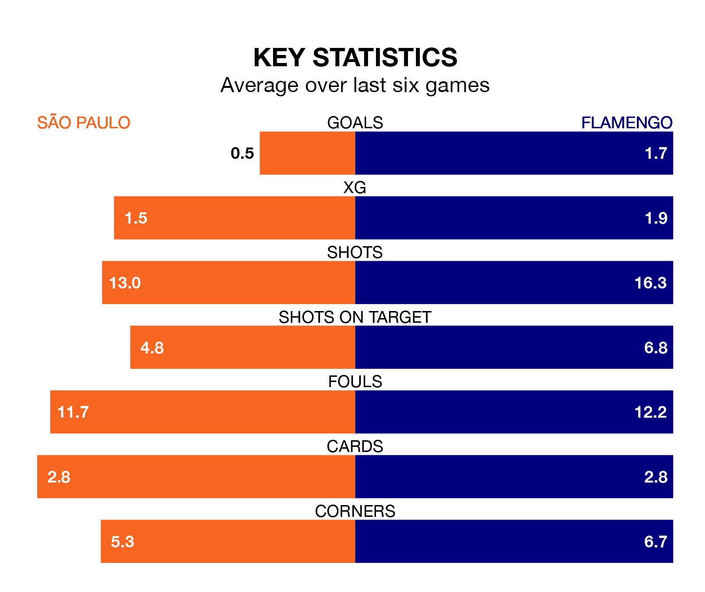

Flamengo travel to São Paulo on early Thursday in Serie A.
The visitors come into the game on the back of a win in their last match, having beaten Cuiabá 2-1 at home, with goals from Pedro Guilherme Abreu dos Santos and Luiz Araújo.
São Paulo, meanwhile, lost their last match, 2-1 against Atlético Mineiro, with their goal scored by Luciano da Rocha Neves.
With 56 goals in 37 games so far this season, Flamengo are scoring more than average in the league with 1.5 goals per game. And they are conceding fewer than average, letting in 41 goals at a rate of 1.1 per game.
São Paulo, meanwhile, are below average scorers, with 1.1 goals per game, compared to a league average of 1.2. They have conceded 1.0 goal per game.
The away team are third in the table after 37 games, of which they have won 19 and drawn nine, earning 66 points.
The hosts are eight places behind Flamengo in 11th, with 13 wins and 11 draws putting them on 50 points.
In the last 10 years, São Paulo and Flamengo have played each other on 25 occasions. São Paulo won nine of them, Flamengo eight, and they drew eight times.
On average, São Paulo scored 1.3 goals and Flamengo 1.4 in those matches.
Their last meeting was on September 24, when they played out a 1-1 draw.
São Paulo are in mixed form in Serie A, with two wins and two draws from their last six games.
With four wins and a draw over that period, Flamengo's form is better – they have taken 13 points from 18, compared to São Paulo's eight.
In Abreu dos Santos, the visitors have one of the league's sharpest shooters so far this season. He has notched 12 goals in 33 appearances, to sit sixth in the scoring charts.
His goal rate of one every 172 minutes is slightly quicker than that of Jonathan Calleri, the home side's top scorer with a goal every 153 minutes, and a total of nine goals in 19 games.
